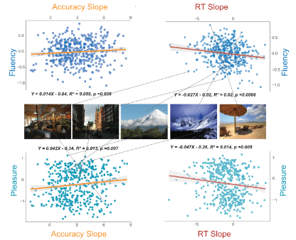

Aesthetics in real-world scenes
General direction
We feel beauty from sceneries in our daily life. I'm studying how and why we experience this feeling based on objective measurements and models.
Sub-projects

Categorization links Perceptual Fluency and Aesthetic Pleasure
Perceptual fluency is the ease with which incoming stimuli are processed. Fluency facilitates categorization decisions (Miles et al, 2012; Torralbo et al, 2013) and increases subjective feelings of aesthetic pleasure (Reber et al 2004). Prototypical members of a semantic category are also processed with higher fluency and aesthetic pleasure. We here examine the relationship of categorization behavior with perceptual fluency and aesthetic pleasure. Participants were asked to categorize briefly presented scene images into one of six categories. Images were immediately followed by a perceptual mask. Images were presented at five different durations by setting the stimulus onset asynchrony (SOA) to five different values, ranging from 13.3 to 106.6 milliseconds. Reaction time and categorization accuracy were recorded at each SOA for each image. In a separate online experiment, participants on Prolific were presented with these images and asked to rate them based on two questions: “How easy is this image to perceive?” and “How much do you enjoy viewing this image?”. Responses were collected on a 5-point Likert scale. We found that a change in reaction time as a function of stimulus presentation during categorization tasks provided an objective index for feelings of fluency, whereas categorization accuracy predicted aesthetic pleasure responses. We also found a significant correlation between fluency and aesthetic pleasure and no association between categorization accuracy and fluency. Our results indicate a dissociation between fluency and aesthetic pleasure. For fluently experienced stimuli, categorization speed increases more quickly with longer SOAs, whereas categorization accuracy is higher for more enjoyable stimuli. Different aspects of categorization behavior can be used to understand the relationships between prototypicality, fluent processing and aesthetic pleasure. Reward processing mechanisms may underlie the neural basis of this triad.